Wing Spar Optimization for Aircraft Design
Overview
This project minimized the structural mass of a UAV wing semi-spar - the primary load-bearing element of the wing - subject to stress, geometric, and thickness constraints. The spar spans 7.5 m and was designed for a 500 kg UAV executing a 2.5 g maneuver. A carbon-fiber composite was modeled with density 1600 kg/m³, Young's modulus 70 GPa, and ultimate strength 600 MPa.
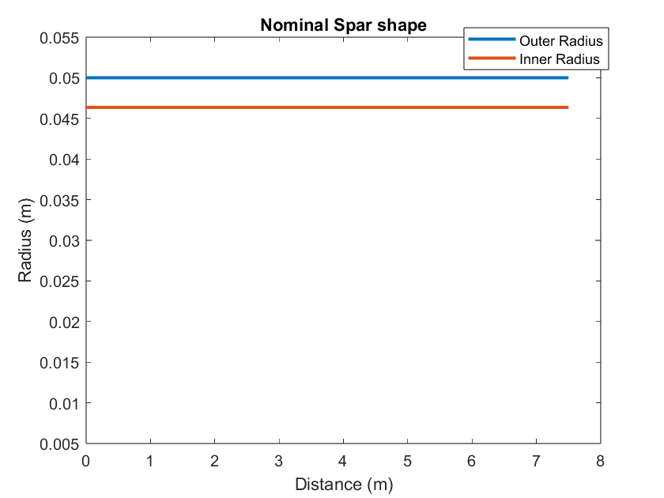
Analysis Model
The spar was treated as a cantilever beam under linearly distributed aerodynamic loading using Euler-Bernoulli beam theory, discretized with Hermite-cubic finite elements. The governing partial differential equation and boundary conditions are:
d²/dx²(EIyy · d²w/dx²) = q ∀x ∈ [0, L]
w(0) = 0, w′(0) = 0, w″(L) = 0, w‴(L) = 0
Normal stress at each cross-section was derived from curvature:
σxx(x) = −zmax · E · d²w/dx²
The cross-section is a circular annulus; the second moment of area is Iyy = (π/4)(ro⁴ − ri⁴). Spar volume (and hence mass) was computed element-by-element using a tapered-cylinder formula.
Geometry Parameterization & Design Variables
The design variable vector alternates inner and outer radii at each of the N+1 nodes:
r = [ri,1, ro,1, ri,2, ro,2, … , ri,N+1, ro,N+1]T
This gave 52 design variables for N = 25 elements (26 node pairs).
Optimization Setup
MATLAB's fmincon with the SQP (Sequential Quadratic Programming) algorithm was used.
Constraints enforced:
- Wall thickness: ro − ri ≥ 2.5 mm
- Outer radius: ro ≤ 50 mm; inner radius: ri ≥ 10 mm
- Stress: σi ≤ σultimate at every node
Gradients of both the objective (mass) and nonlinear constraints (stress) were computed via the complex-step method at step size h = 10⁻⁶⁰, supplying exact analytic-quality derivatives to the solver.
Mesh Convergence Study
A fixed tapered design (ro: 0.05→0.03 m, ri: 0.03→0.02 m) was analyzed across N = 1…100. The normalized tip stress converged to within ±0.01% of its asymptotic value at N = 25 (normalized error ≈ −1.76×10⁻⁵), confirming sufficient accuracy at manageable computational cost.
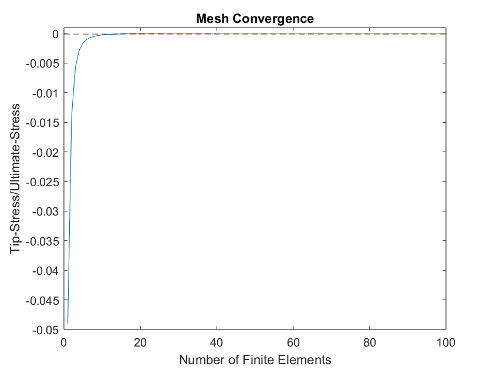
Results & Discussion
The optimized spar tapers aggressively from root to tip, with both radii decreasing smoothly until the geometry hits its minimum allowable values at approximately 5 m. Beyond that point, the spar holds at minimum size — stress has dropped well below the ultimate limit and further material removal is constrained by geometry bounds rather than stress.
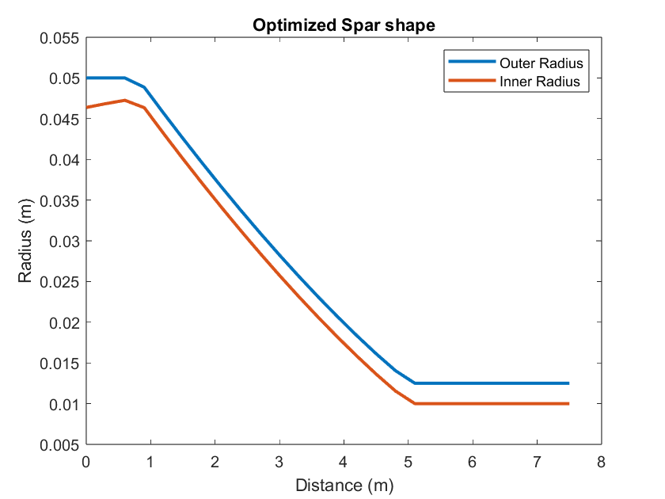
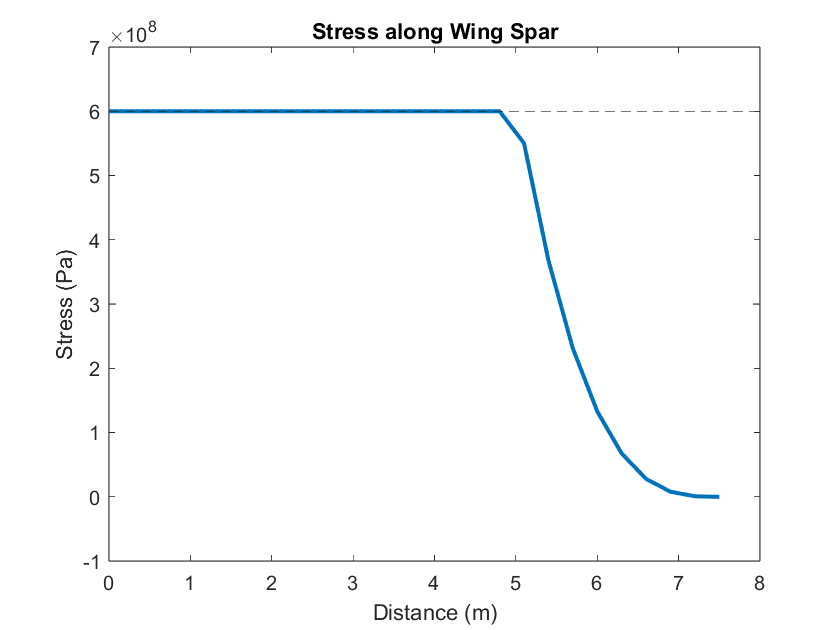
Stress behavior: The spar operates at exactly σultimate from root to ~5 m, then drops sharply toward zero - a hallmark of a fully stressed, material-optimal design. The optimizer exploits every available margin near the root where bending moments are largest.
The vertical tip displacement reached 7.61 m for a 7.5 m spar - nearly 100% of the span length. While mathematically consistent with the small-deflection Euler-Bernoulli model, this is physically unrealistic for a carbon-fiber composite and signals a key limitation: the absence of a deflection constraint allows the optimizer to over-thin the spar. The first-order optimality converged to 10⁻¹⁰ and feasibility to 10⁻⁹, confirming the solver found an appropriate local minimum.
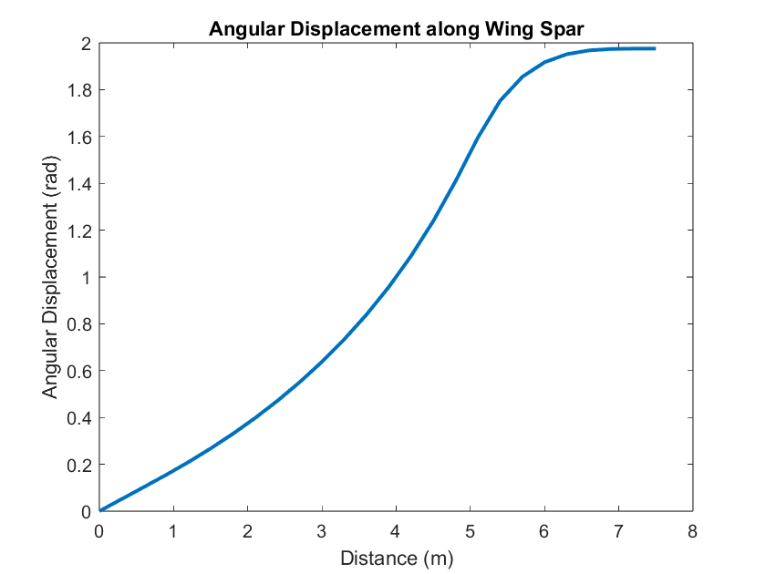
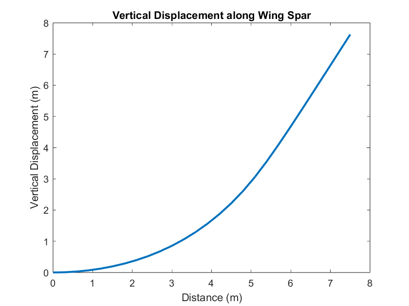
Skills & Tools
MATLAB · fmincon / SQP · Finite Element Method · Euler-Bernoulli Beam Theory · Hermite-Cubic Shape Functions · Complex-Step Differentiation · Gradient-Based Optimization · Mesh Convergence Analysis · Structural Mechanics
Overview
Building directly on deterministic work, this analysis introduced loading uncertainty into the optimization. Real aerodynamic loads are never perfectly known - gusts, measurement error, and flight variability all introduce randomness. The force distribution was modeled as the nominal load plus a stochastic perturbation, and the stress constraint was tightened to require that mean + 6 standard deviations of stress remain below the yield strength - a six-sigma design criterion ensuring robustness against extreme load realizations.
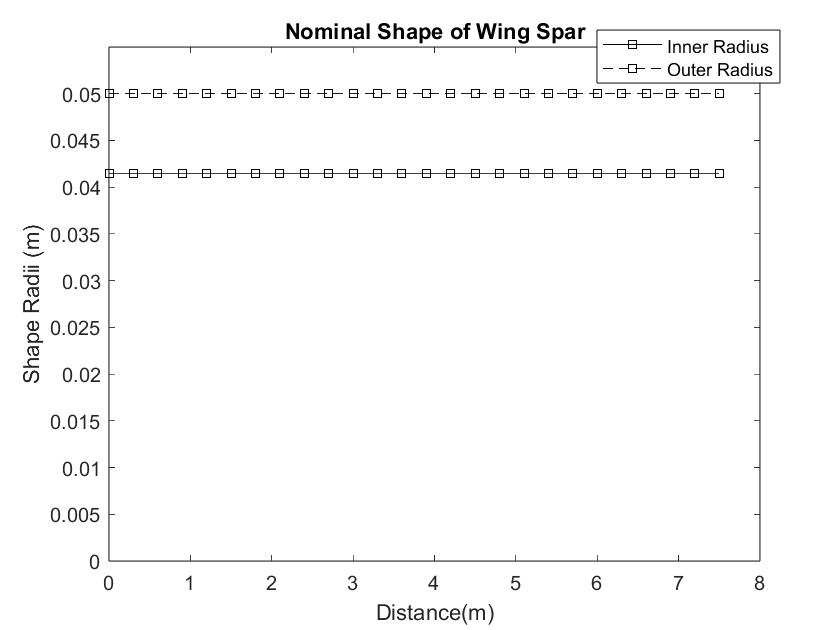
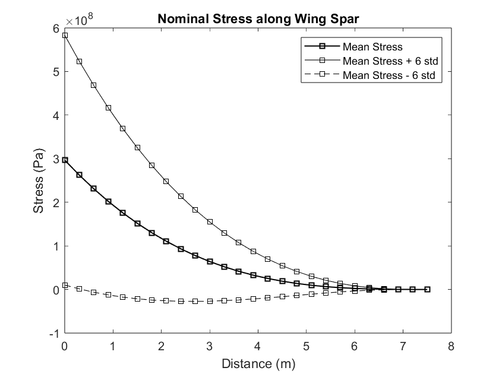
Uncertainty Model
The loading uncertainty was expressed as a sum of cosine modes with Gaussian random coefficients:
f(x, ξ) = fnom(x) + Σn=1..4 ξn cos((2n−1)πx / 2L)
ξn ~ 𝒩(0, fnom(0) / 10n)
Each mode's standard deviation decreases with index n, so higher spatial-frequency perturbations carry less energy. This gives a four-dimensional random input space (one ξ per mode).
Stochastic Collocation via Gauss-Hermite Quadrature
The mean and variance of stress were computed as weighted sums over quadrature points. For Gaussian inputs, Gauss-Hermite quadrature is optimal. The kernel adjustment from the standard Hermite form to a proper Gaussian PDF is:
w(k) / √π → w(k) and √2σ · ξ(k) + μ → ξ(k)
With 4 stochastic dimensions and m quadrature points per dimension, the full tensor product requires m⁴ stress evaluations per constraint call. A quadrature convergence study (2–7 points) showed that 2 points yielded normalized errors on the order of 10⁻⁵ relative to the yield stress - negligible compared to the MPa-scale stresses involved - so 2 points were used throughout optimization to keep runtime tractable.
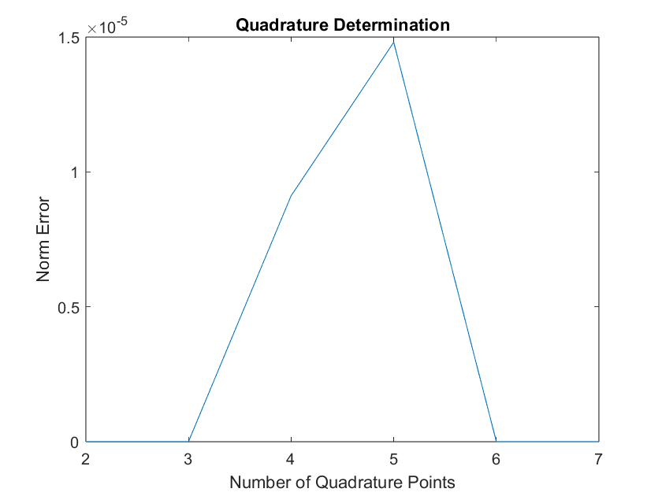
Stress Constraint Under Uncertainty
The updated nonlinear constraint required that the mean stress plus six standard deviations remain feasible everywhere along the spar:
𝔼[σ(x, ξ)] + 6 √Var[σ(x, ξ)] ≤ σyield
Standard deviation was recovered from the quadrature weights: √(𝔼[σ²] − 𝔼[σ]²). Gradients of both the mean and variance with respect to design variables were again computed via the complex-step method, enabling exact gradient supply to fmincon.
Results & Discussion
The optimized shape under uncertainty has a larger cross-section near the root compared to the deterministic design, the six-sigma buffer forces the spar to carry extra material as insurance against load exceedances. The geometry tapers and reaches minimum bounds at around 6 m (vs. 5 m in Project 2), consistent with the stress curve dropping off later.
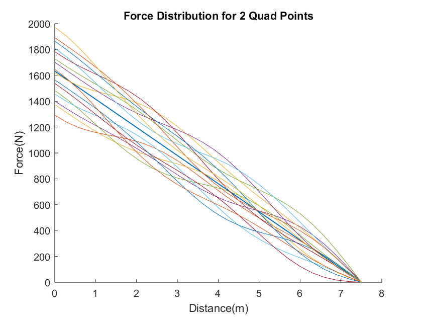
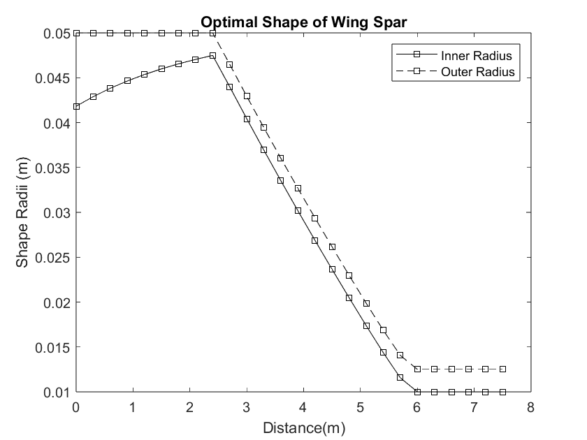
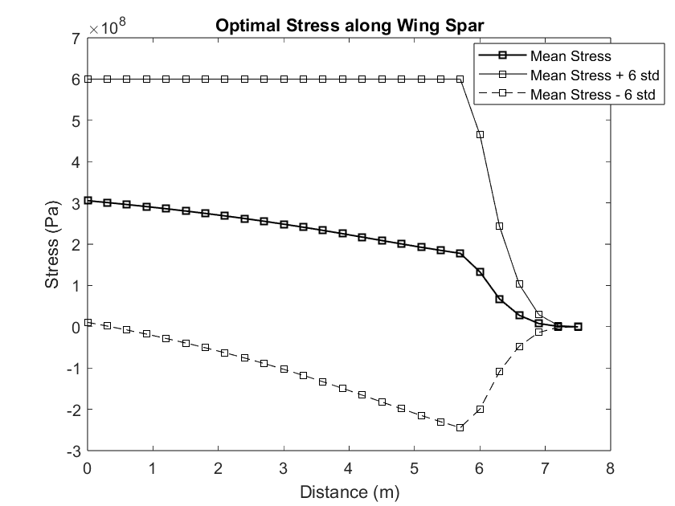
Key improvement: The mean vertical tip deflection fell to 2.75 m and the maximum angular displacement to ~0.7 rad — significantly more physical than the near-100% span deflection seen without uncertainty. The uncertainty buffer effectively acts as an implicit stiffness constraint, producing a more realistic structural design without requiring an explicit deflection limit.
The six-sigma constraint creates a more feasible design at the cost of slightly reduced mass optimality. The feasibility history converged to 10⁻¹² (vs. 10⁻⁹ in Project 2) and first-order optimality to 10⁻⁵, confirming a well-converged local minimum.
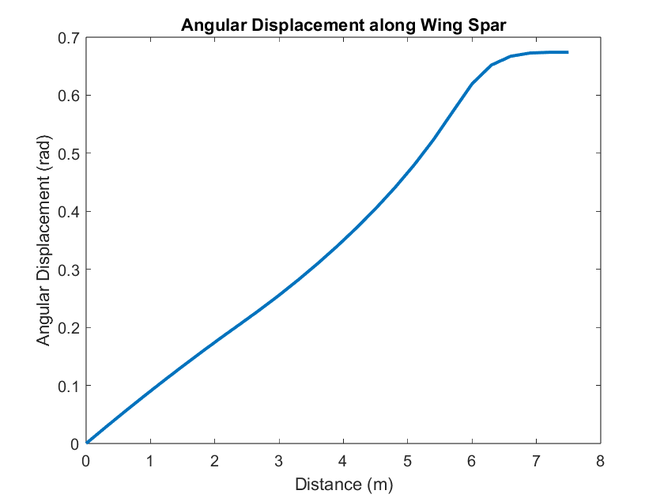
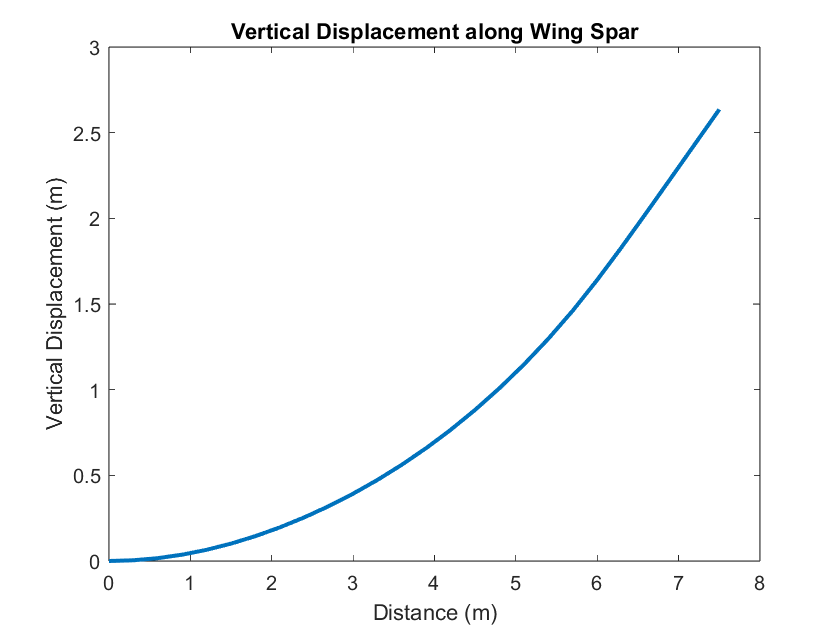
Skills & Tools
MATLAB · fmincon / SQP · Stochastic Collocation · Gauss-Hermite Quadrature · Optimization Under Uncertainty · Six-Sigma Design · Complex-Step Differentiation · Finite Element Method · Probabilistic Structural Analysis
Deterministic vs. Under Uncertainty: Side-by-Side
The uncertainty-based approach builds directly on the deterministic approach by layering loading uncertainty into an otherwise identical optimization framework. The table below highlights how accounting for uncertainty reshapes both the optimal design and its physical realism.
| Attribute | Deterministic | Under Uncertainty |
|---|---|---|
| Nominal mass | 13.26 kg | 29.32 kg |
| Optimized mass | 4.91 kg | 8.58 kg |
| Mass reduction | 62.9% | 70.7% |
| Stress constraint | σ ≤ σult | 𝔼[σ] + 6σstd ≤ σyield |
| Tip vertical deflection | 7.61 m (≈ spar length — unrealistic) | 2.75 m (more physical) |
| Max angular displacement | ~2 rad | ~0.7 rad |
| Geometry reaches min bounds at | ~5 m | ~6 m |
| Feasibility at convergence | 10⁻⁹ | 10⁻¹² |
| First-order optimality | 10⁻¹⁰ | 10⁻⁵ |
| Gradient method | Complex step (h = 10⁻⁶⁰) | Complex step (h = 10⁻³⁰) |
| Key limitation | No deflection constraint; Euler-Bernoulli small-strain assumption violated | Same beam theory limits apply; tensor-product quadrature scales exponentially with dimensions |
Key Takeaways
Uncertainty as a natural stiffness constraint. Adding the six-sigma stress buffer implicitly forced a stiffer, more realistic spar - no explicit deflection limit was needed to achieve a physically reasonable tip displacement. This illustrates how robust optimization can simultaneously improve reliability and physical plausibility.
Computational trade-off. The 4-D stochastic collocation with m = 2 quadrature points per dimension requires 2⁴ = 16 stress evaluations per constraint call. Choosing 2 points (justified by the convergence study) keeps this tractable; using 7 points would require 7⁴ = 2401 evaluations, a 150× increase for negligible accuracy gain at these stress magnitudes.
Model limitations & future work. Both designs inherit the Euler-Bernoulli assumption of small deformations and isotropic, elastic material behavior - neither holds well for a carbon-fiber composite undergoing large deflections. Adding an explicit tip deflection constraint and a geometrically nonlinear beam model would produce a more manufacturable design, likely at the cost of exceeding the 60%/70% mass-reduction thresholds.